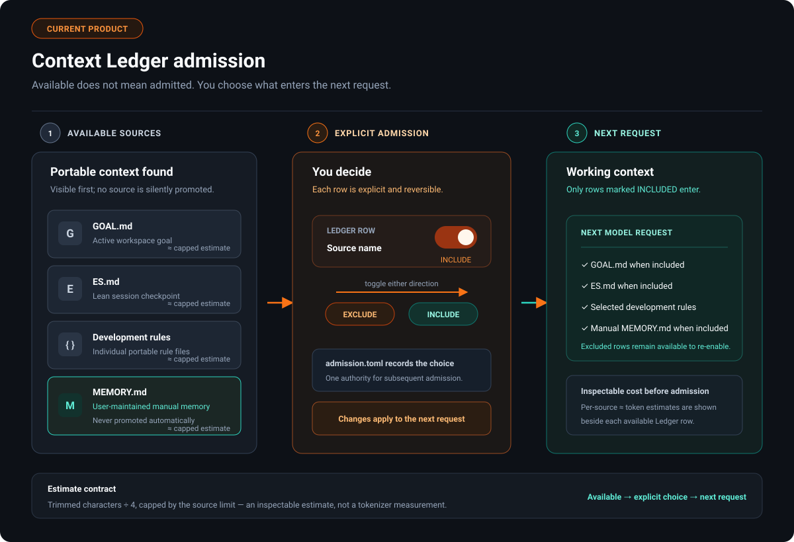
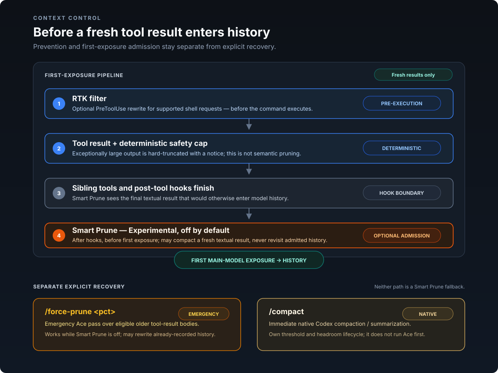
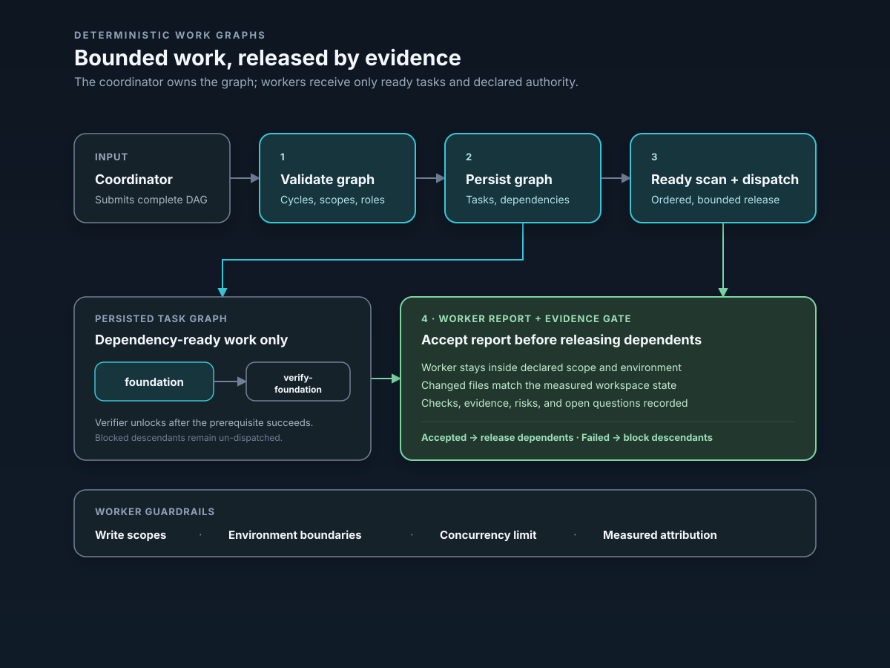
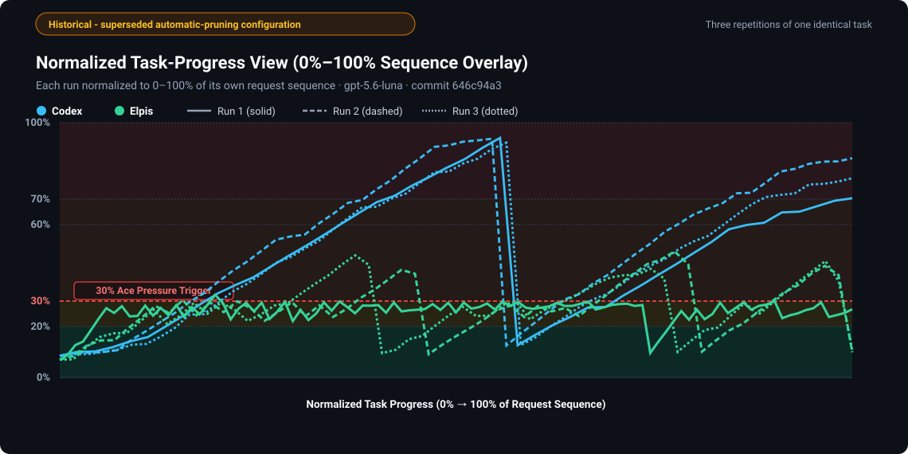
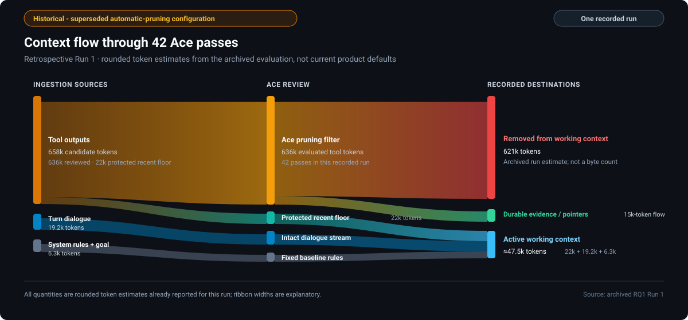

GoalStabilize the release candidate
retained
v0.2.0 · Linux-first early access
Change the runtime.
Keep the thread.
Elpis keeps the goal, admitted context, permissions, and evidence visible while the AI runtime changes underneath.
Local, inspectable state
Bring your runtime
Cache-stable admission
Active runtime
Local
connected
Context3 instructions admitted
retained
ControlWorkspace writes only
retained
Evidence2 checks attached
retained
Runtime changed. Working state remained explicit.
One continuity layer across
Hosted providersLocal modelsOpenAI-compatible APIsNative runtimes
Continuity, not captivity
The provider can change.
The agreement does not.
Elpis owns the durable layer around inference, so a handoff does not have to become a reset.
Goal stays current
The active objective and continuation state remain readable instead of disappearing into chat history.
Context is admitted
Project instructions and user-maintained memory enter through a visible Context Ledger—not an invisible memory claim.
AGENTS.mdGOAL.mdES.md
Evidence travels too
Permissions, tool results, changed files, and verification remain part of the inspectable working state.
tests12 / 12
The Context Ledger
Know what the agent knows.
Elpis separates available project material from what a runtime is actually allowed to see. Admission is visible, reversible, and tied to the session.
- 01 Inspect active instructions before a run
- 02 Keep project memory manual and auditable
- 03 Resume from a concise execution state
Context Ledger● admitted state

Admission-time optimization
Decide once.
Then keep appending.
Smart Prune can shorten a fresh textual tool result before the main model first sees it. The admitted event keeps its call identity and is never revisited by Smart Prune.
Tool finishedHooks completeSmart PruneMain request
Fresh source1,385 approx. tokens
rg output
231 matching lines
repeated paths and symbols
exact source preserved in auditFirst admitted form472 approx. tokens
Findings retained
call id unchanged
evidence bundle linked
later requests append66%smaller in this recorded admission
98.96%cached input on its linked first response
One live observation, not a matched cost or quality comparison. Smart Prune is Experimental and off by default.
A legible handoff
Resume the work,
not the warm-up.
Record
The goal and execution state stay in small, readable project files.
Switch
Choose a reachable hosted or local runtime explicitly.
Admit
Review the context that will cross the boundary.
Continue
Carry forward decisions, constraints, and verification evidence.
Elpis Lab
Experiments stay labeled.
Promising work is useful only when its maturity is visible. These controls are experimental and off by default.
Experimental

Smart Prune
Experimental first-exposure optimization. It fails open, stays off by default, and never rewrites a result after admission.
Experimental

Deterministic work graphs
Experimental validated DAGs with write scopes, verifiers, and evidence gates—without automatic merging or pushing.
Historical evaluationRecoverability before speed
- 6 / 6
- tested targets retained
- 7 / 9
- properties fully recoverable
- 0
- properties absent
These results describe a superseded high-frequency pruning setup. They do not establish a general task-quality improvement.
Historical evaluation
Show the traces.
Keep the caveats.
These charts preserve the original three-run structure from a superseded high-frequency retrospective-pruning setup. They do not describe the v0.2.0 default or establish better task quality.


Linux-first preview
Put continuity
in the loop.
Install the current early-access release, then launch Elpis from your terminal. Inspect the source before you run the script.
Read installation and source
$
curl -fsSL https://raw.githubusercontent.com/MasihMoafi/Elpis/main/scripts/install-elpis.sh | bash && ~/.local/bin/elpis
Current release: v0.2.0 · Linux x86_64 · early access
Before you switch
Straight answers.
Does Elpis replace the model provider?+
No. Elpis manages the session boundary around inference; the selected provider or local runtime still performs generation.
Does Elpis remember everything automatically?+
No. Project memory is user-maintained and only enters a session when it is admitted through the Context Ledger.
Is Smart Prune enabled?+
No. It is Experimental and off by default. `/force-prune` is separate emergency recovery; `/compact` remains native compaction.
Is this production-ready?+
Not yet. The current build is an early-access, Linux-first candidate while daily-driver acceptance continues.